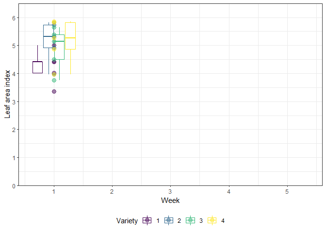

Repeated Measures in Time
# packages
pacman::p_load(conflicted, # package function conflicts
dplyr, purrr, tibble, tidyr, stringr, # data handling
gganimate, ggplot2, gifski, viridis, # plot
nlme, lme4, glmmTMB, sommer, # mixed modelling
AICcmodavg, mixedup) # mixed model extractions
# package function conflicts
conflict_prefer("filter", "dplyr")
# data
dat <- agriTutorial::sorghum %>%
rename(block = Replicate, plot = factplot) %>%
dplyr::select(y, variety, block, plot, factweek, varweek) %>%
as_tibble()| y | variety | block | plot | factweek | varweek |
|---|---|---|---|---|---|
| 5.00 | 1 | 1 | 1 | 1 | 1 |
| 4.84 | 1 | 1 | 1 | 2 | 2 |
| 4.02 | 1 | 1 | 1 | 3 | 3 |
| 3.75 | 1 | 1 | 1 | 4 | 4 |
| 3.13 | 1 | 1 | 1 | 5 | 5 |
| 4.42 | 1 | 2 | 2 | 1 | 1 |
| 4.30 | 1 | 2 | 2 | 2 | 2 |
| 3.67 | 1 | 2 | 2 | 3 | 3 |
| 3.23 | 1 | 2 | 2 | 4 | 4 |
| 2.83 | 1 | 2 | 2 | 5 | 5 |
| 4.42 | 1 | 3 | 3 | 1 | 1 |
| 4.10 | 1 | 3 | 3 | 2 | 2 |
| 3.46 | 1 | 3 | 3 | 3 | 3 |
| 3.09 | 1 | 3 | 3 | 4 | 4 |
| 2.82 | 1 | 3 | 3 | 5 | 5 |
| 4.01 | 1 | 4 | 4 | 1 | 1 |
| 3.89 | 1 | 4 | 4 | 2 | 2 |
| 3.21 | 1 | 4 | 4 | 3 | 3 |
| 2.89 | 1 | 4 | 4 | 4 | 4 |
| 2.56 | 1 | 4 | 4 | 5 | 5 |
| 3.36 | 1 | 5 | 5 | 1 | 1 |
| 3.10 | 1 | 5 | 5 | 2 | 2 |
| 2.67 | 1 | 5 | 5 | 3 | 3 |
| 2.47 | 1 | 5 | 5 | 4 | 4 |
| 2.16 | 1 | 5 | 5 | 5 | 5 |
| 5.82 | 2 | 1 | 6 | 1 | 1 |
| 5.60 | 2 | 1 | 6 | 2 | 2 |
| 5.05 | 2 | 1 | 6 | 3 | 3 |
| 4.72 | 2 | 1 | 6 | 4 | 4 |
| 4.46 | 2 | 1 | 6 | 5 | 5 |
| 5.73 | 2 | 2 | 7 | 1 | 1 |
| 5.59 | 2 | 2 | 7 | 2 | 2 |
| 5.00 | 2 | 2 | 7 | 3 | 3 |
| 4.65 | 2 | 2 | 7 | 4 | 4 |
| 4.42 | 2 | 2 | 7 | 5 | 5 |
| 5.31 | 2 | 3 | 8 | 1 | 1 |
| 5.19 | 2 | 3 | 8 | 2 | 2 |
| 4.86 | 2 | 3 | 8 | 3 | 3 |
| 4.44 | 2 | 3 | 8 | 4 | 4 |
| 4.22 | 2 | 3 | 8 | 5 | 5 |
| 4.92 | 2 | 4 | 9 | 1 | 1 |
| 4.66 | 2 | 4 | 9 | 2 | 2 |
| 4.56 | 2 | 4 | 9 | 3 | 3 |
| 4.16 | 2 | 4 | 9 | 4 | 4 |
| 3.99 | 2 | 4 | 9 | 5 | 5 |
| 3.96 | 2 | 5 | 10 | 1 | 1 |
| 3.86 | 2 | 5 | 10 | 2 | 2 |
| 3.50 | 2 | 5 | 10 | 3 | 3 |
| 3.13 | 2 | 5 | 10 | 4 | 4 |
| 2.95 | 2 | 5 | 10 | 5 | 5 |
| 5.65 | 3 | 1 | 11 | 1 | 1 |
| 5.97 | 3 | 1 | 11 | 2 | 2 |
| 5.27 | 3 | 1 | 11 | 3 | 3 |
| 5.07 | 3 | 1 | 11 | 4 | 4 |
| 4.52 | 3 | 1 | 11 | 5 | 5 |
| 5.39 | 3 | 2 | 12 | 1 | 1 |
| 5.49 | 3 | 2 | 12 | 2 | 2 |
| 5.08 | 3 | 2 | 12 | 3 | 3 |
| 4.87 | 3 | 2 | 12 | 4 | 4 |
| 4.32 | 3 | 2 | 12 | 5 | 5 |
| 5.15 | 3 | 3 | 13 | 1 | 1 |
| 5.28 | 3 | 3 | 13 | 2 | 2 |
| 4.93 | 3 | 3 | 13 | 3 | 3 |
| 4.67 | 3 | 3 | 13 | 4 | 4 |
| 4.15 | 3 | 3 | 13 | 5 | 5 |
| 4.50 | 3 | 4 | 14 | 1 | 1 |
| 4.89 | 3 | 4 | 14 | 2 | 2 |
| 4.74 | 3 | 4 | 14 | 3 | 3 |
| 4.49 | 3 | 4 | 14 | 4 | 4 |
| 4.10 | 3 | 4 | 14 | 5 | 5 |
| 3.75 | 3 | 5 | 15 | 1 | 1 |
| 3.74 | 3 | 5 | 15 | 2 | 2 |
| 3.55 | 3 | 5 | 15 | 3 | 3 |
| 3.28 | 3 | 5 | 15 | 4 | 4 |
| 3.00 | 3 | 5 | 15 | 5 | 5 |
| 5.86 | 4 | 1 | 16 | 1 | 1 |
| 5.60 | 4 | 1 | 16 | 2 | 2 |
| 5.37 | 4 | 1 | 16 | 3 | 3 |
| 5.00 | 4 | 1 | 16 | 4 | 4 |
| 4.37 | 4 | 1 | 16 | 5 | 5 |
| 5.82 | 4 | 2 | 17 | 1 | 1 |
| 5.55 | 4 | 2 | 17 | 2 | 2 |
| 5.29 | 4 | 2 | 17 | 3 | 3 |
| 4.95 | 4 | 2 | 17 | 4 | 4 |
| 4.07 | 4 | 2 | 17 | 5 | 5 |
| 5.26 | 4 | 3 | 18 | 1 | 1 |
| 5.06 | 4 | 3 | 18 | 2 | 2 |
| 4.76 | 4 | 3 | 18 | 3 | 3 |
| 4.48 | 4 | 3 | 18 | 4 | 4 |
| 3.94 | 4 | 3 | 18 | 5 | 5 |
| 4.87 | 4 | 4 | 19 | 1 | 1 |
| 4.75 | 4 | 4 | 19 | 2 | 2 |
| 4.55 | 4 | 4 | 19 | 3 | 3 |
| 4.33 | 4 | 4 | 19 | 4 | 4 |
| 3.83 | 4 | 4 | 19 | 5 | 5 |
| 3.96 | 4 | 5 | 20 | 1 | 1 |
| 3.76 | 4 | 5 | 20 | 2 | 2 |
| 3.56 | 4 | 5 | 20 | 3 | 3 |
| 3.18 | 4 | 5 | 20 | 4 | 4 |
| 2.96 | 4 | 5 | 20 | 5 | 5 |
Motivation
The example in this chapter is taken from Example 4 in Piepho & Edmondson (2018) (see also the Agritutorial vigniette). It considers data from a sorghum trial laid out as a randomized complete block design (5 blocks) with variety (4 sorghum varities) being the only treatment factor. Thus, we have a total of 20 plots. It is important to note that our response variable (y), the leaf area index, was assessed in five consecutive weeks on each plot starting 2 weeks after emergence. Therefore, the dataset contains a total of 100 values and what we have here is longitudinal data, a.k.a. repeated measurements over time, a.k.a. a time series analysis.
As Piepho & Edmondson (2018) put it: “the week factor is not a treatment factor that can be randomized. Instead, repeated measurements are taken on each plot on five consecutive occasions. Successive measurements on the same plot are likely to be serially correlated, and this means that for a reliable and efficient analysis of repeated-measures data we need to take proper account of the serial correlations between the repeated measures (Piepho, Büchse & Richter, 2004; Pinheiro & Bates, 2000).”
gganimate_plot <- ggplot(data = dat, aes(
y = y,
x = varweek,
group = variety,
color = variety
)) +
geom_boxplot(outlier.shape = NA) +
geom_point(alpha = 0.5, size = 3) +
scale_color_viridis(option = "D",
discrete = TRUE,
name = "Variety") +
scale_y_continuous(
name = "Leaf area index",
limits = c(0, 6.5),
expand = c(0, 0),
breaks = c(0:6)
) +
xlab("Week") +
theme_bw() +
theme(legend.position = "bottom") +
transition_time(varweek) +
shadow_mark(exclude_layer = 2)
animate(gganimate_plot, renderer = gifski_renderer()) # render gif
Modelling
Our goal is therefore to build a suitable model taking serial correlation into account. In order to do this, we will initially consider the model for a single time point. Then, we extend this model to account for multiple weeks by allowing for week-speficic effects. Finally, we further allow for serially correlated error terms.
Single week
When looking at data from a single time point (e.g. the first week), we merely have 20 observations from a randomized complete block design with a single treatment factor. It can therefore be analyzed with a simple one-way ANOVA (fixed variety effect) for randomized complete block designs (fixed block effect):
dat.wk1 <- dat %>% filter(factweek == "1") # subset data from first week only
mod.wk1 <- lm(formula = y ~ variety + block,
data = dat.wk1)We could now go on and look at the ANOVA via anova(mod.wk1) and it would indeed not be wrong to simply repeat this for each week. Yet, one may not be satisfied with obtaining multiple ANOVA results - namely one per week. This is especially likeliy in case the results contradict each other, because e.g. the variety effects are found to be significant in only two out of five weeks. Therefore, one may want to analyze the entire dataset i.e. the multiple weeks jointly.
Multiple weeks - independent errors
Going from the single-week-analysis to jointly analyzing the entire dataset is more than just changing the data = statement in the model. This is because “it is realistic to assume that the treatment effects evolve over time and thus are week-specific. Importantly, we must also allow for the block effects to change over time in an individual manner. For example, there could be fertility or soil type differences between blocks and these could have a smooth progressive or cumulative time-based effect on differences between the blocks dependent on factors such as temperature or rainfall” (Piepho & Edmondson, 2018). We implement this by taking the model in mod.wk1 and multipyling each effect with factweek. Note that this is also true for the general interecept (µ) in mod.wk1, meaning that we would like to include one intercept per week, which can be achieved by simply adding factweek as a main effect as well. This leaves us with fixed main effects for factweek, variety, and block, as well as the week-specific effects of the latter two factweek:variety and factweek:block.
Finally, note that we are not doing anything about the model’s error term at this point. More specifically this means that its variance structure is still the default iid (independent and identically distributed) - see our summary on correlation/variance strucutres here.
nlme
Since the models in this chapter do not contain any random effects, we make use of gls() instead of lme(). Furthermore, the above named model factweek + variety + block + factweek:variety + factweek:block can be written in a shorter syntax as:
mod.iid.nlme <- nlme::gls(model = y ~ factweek * (variety + block),
correlation = NULL, # default, i.e. homoscedastic, independent errors
data = dat)
# Extract variance component estimates
mod.iid.nlme.VC <- tibble(varstruct = "iid") %>%
mutate(sigma = mod.iid.nlme$sigma) %>%
mutate(Variance = sigma^2)| varstruct | sigma | Variance |
|---|---|---|
| iid | 0.152 | 0.023 |
lme4
Since the models in this chapter do not contain any random effects, we cannot use lmer() or any other function of the lme4 package. However, even if there were random effects in our models, the short answer here is that with lme4 it is not possible to fit any variance structures.
More specifically, we can read in an lme4 vigniette: “The main advantage of nlme relative to lme4 is a user interface for fitting models with structure in the residuals (various forms of heteroscedasticity and autocorrelation) and in the random-effects covariance matrices (e.g., compound symmetric models). With some extra effort, the computational machinery of lme4 can be used to fit structured models that the basic lmer function cannot handle (see Appendix A)”
Michael Clark puts it as “Unfortunately, lme4 does not provide the ability to model the residual covariance structure, at least not in a straightforward fashion”
Accordingly, there is no info on this package for this chapter beyond this point.
glmmTMB
In glmmTMB() it is -to our knowledge- not possible to adjust the variance structure of the error.
Just like in
nlme, there is aweights=argument inglmmTMB(). However, to our understanding, they have different functions:In
nlme, it requires “an optionalvarFuncobject or one-sided formula describing the within-group heteroscedasticity structure” (nlme RefMan) and we make use of this in the chapter at hand.In
glmmTMB, the RefMan only states “weights, as inglm. Not automatically scaled to have sum 1”. Following this trail, theglmdocumentation description for theweights=argument is “an optional vector of ‘prior weights’ to be used in the fitting process. Should be NULL or a numeric vector.”. Accordingly, it cannot be used to allow for heterogeneous error variances in this package.
We can, however, “fix the residual variance to be 0 (actually a small non-zero value)” and therefore “force variance into the random effects” (glmmTMB RefMan) via adding the dispformula = ~ 0 argument. Thus, when doing so, we need to make sure to also add a random term to the model with the desired variance structure. By taking both of these actions, we are essentially mimicing the error (variance) as a random effect (variance). We achieve this by first creating a unit column in the data with different entries for each data point.
Note that doing this may not be necessary for mod.iid.glmm with the default homoscedastic, independent error variance structure, but since it will be necessary for the following model with a more sophisticated variance structure, we will apply it here, too.
Finally, for extracting the variance component estimates from glmmTMB objects in this chapter, we use the extract_vc function from the mixedup helper package.
dat <- dat %>%
mutate(unit = 1:n() %>% as.factor) # new column with running number
mod.iid.glmm <- glmmTMB(formula = y ~ factweek * (variety + block)
+ (1 | unit), # add random unit term to mimic error variance
dispformula = ~ 0, # fix original error variance to 0
REML = TRUE, # needs to be stated since default = ML
data = dat)
# Extract variance component estimates
mod.iid.glmm.VC <- mod.iid.glmm %>%
extract_vc(ci_scale = "var")| group | effect | variance | var_2.5 | var_97.5 | |
|---|---|---|---|---|---|
| unit | unit | Intercept | 0.023 | 0.016 | 0.033 |
| 1 | Residual | 0.000 |
sommer
It is quite easy to extract variance component estimates from sommer objects in a table format we are used to:
mod.iid.somm <- mmer(fixed = y ~ factweek + variety + block + factweek:variety + factweek:block,
rcov = ~ units, # default = iid
data = dat, verbose=F)## Version out of date. Please update sommer to the newest version using:
## install.packages('sommer') in a new session
## Use the 'date.warning' argument to disable the warning message.# Extract variance component estimates
mod.iid.somm.VC <- summary(mod.iid.somm)$varcomp | grp | VarComp | VarCompSE | Zratio | Constraint |
|---|---|---|---|---|
| units.y-y | 0.023 | 0.004 | 5.477 | Positive |
SAS
In SAS, there is an actual subject= statement that is used to identify the subjects on which repeated measurements are taken. This may not be necessary for the iid with the default homoscedastic, independent error variance structure, but since it will be necessary for the following model with a more sophisticated variance structure, we will apply it here, too. In the end, the entire repeated line below could also be left out as it simply explicitly states the default setting.
| mod | CovParm | Subject | Estimate |
|---|---|---|---|
| iid | factweek | plot | 0.023 |
Multiple weeks - autocorrelated errors
Note that at this point of the analysis, the model above with an independent, homogeneous error term above is neither the right, nor the wrong choice. It must be clear that “measurements on the same plot are likely to be serially correlated”. Thus, it should be investigated whether any covariance structure for the error term (instead of the default independence between errors) is more appropriate to model this dataset. It could theoretically be the case that this mod.iid is the best choice here, but we cannot confirm this yet, as we have not looked at any alternatives. This is what we will do in the next step.
One may ask at what step of the analysis it is best to compare and find the appropriate covariance structure for the error term in such a scenario. It is indeed here, at this step. As Piepho & Edmondson (2018) write: “Before modelling the treatment effect, a variance–covariance model needs to be identified for these correlations. This is best done by using a saturated model for treatments and time, i.e., a model that considers all treatment factors and time as qualitative.”
Note that this saturated model is what we have in
mod.iid. So in short: one should compare variance structures for the error term before running an ANOVA / conducting model selection steps.
Units on which repeated observations are taken are often referred to as subjects. We would now like to allow measurements taken on the same subjects (plot in this case) to be serially correlated, while observations on different subjects are still considered independent. More specifically, we want the errors of the respective observations to be correlated in our model.

Take the visualisation on the left depicting a subset of our data. Here, you can see plots 1 and 2 (out of the total of 20 in our dataset) side by side. Furthermore, they are shown for weeks 1-3 (out of the total of 5 in our dataset). Thus, a total of six values are represented, coming from only two subjects/plots, but obtained in three different weeks. The blue arrows represent correlation among errors. For these six measurements, there are six blue arrows, since there are six error pairs that come from the same plot, respectively. The green lines on the other hand represent error pairs that do not come from the same plot and thus are assumed to be independent. Finally, notice that the errors coming from the same plot, but with two instead of just one week between their measurements, are shown in a lighter blue. This is because one may indeed assume a weaker correlation between errors that are further apart in terms of time passed between measurements.
The latter can be achieved by using the maybe most popular correlation structure for repeated measures over time: first order autoregressive AR(1). Please find the section on AR(1) in our summary on correlation/variance strucutres here. It should be noted that this correlation structure is useful, if all time points are equally spaced, which is the case here, as there is always exactly one week between consecutive time points.
There are other possible models (i.e. other variance structures) for serial correlation of longitudinal data, but for simplicity we will only compare the default
iidmodel above with thear1model below. In fact, Example 4 in Piepho & Edmondson (2018) does investigate other models as well and you can find theirnlmecode in the Agritutorial vigniette.
nlme
In nlme we make use of the correlation = argument and use the corAR1 correlation strucutre class. In its syntax, subjects are identified after the |.
mod.ar1.nlme <- nlme::gls(model = y ~ factweek * (variety + block),
correlation = corAR1(form = ~ varweek | plot),
data = dat)
# Extract variance component estimates
mod.ar1.nlme.VC <- tibble(varstruct = "ar(1)") %>%
mutate(sigma = mod.ar1.nlme$sigma,
rho = coef(mod.ar1.nlme$modelStruct$corStruct, unconstrained = FALSE)) %>%
mutate(Variance = sigma^2,
Corr1wk = rho,
Corr2wks = rho^2,
Corr3wks = rho^3,
Corr4wks = rho^4)| varstruct | sigma | rho | Variance | Corr1wk | Corr2wks | Corr3wks | Corr4wks |
|---|---|---|---|---|---|---|---|
| ar(1) | 0.149 | 0.749 | 0.022 | 0.749 | 0.561 | 0.42 | 0.315 |
lme4
not possible - see above.
glmmTMB
To model the variance structure of our mimiced error term as first order autoregressive, we replace the (1 | unit) from the iid model with ar1(factweek + 0 | plot). As can be seen, subjects are identified after the | and the variance structure in this syntax. Further notice that leaving out the + 0 would by default lead to estimating an additional overall variance (see Details for glmmTMB topic in the RefMan).
Note that by adding the show_cor = TRUE argument to the extract_vc function, we obtain two outputs: The variance component estimates, as seen above for the iid model, as well as the correlation matrix / variance structure for a single plot.
mod.ar1.glmm <- glmmTMB(formula = y ~ factweek * (variety + block)
+ ar1(factweek + 0 | plot), # add ar1 structure as random term to mimic error variance
dispformula = ~ 0, # fix original error variance to 0
REML = TRUE, # needs to be stated since default = ML
data = dat)
# Extract variance component estimates
mod.ar1.glmm.VC <- mod.ar1.glmm %>%
extract_vc(ci_scale = "var", show_cor = TRUE)| group | effect | variance | var_2.5 | var_97.5 | |
|---|---|---|---|---|---|
| plot1 | plot | factweek1 | 0.022 | 0.013 | 0.038 |
| plot2 | plot | factweek2 | 0.022 | 0.013 | 0.038 |
| plot3 | plot | factweek3 | 0.022 | 0.013 | 0.038 |
| plot4 | plot | factweek4 | 0.022 | 0.013 | 0.038 |
| plot5 | plot | factweek5 | 0.022 | 0.013 | 0.038 |
| 1 | Residual | 0.000 |
| cor | factweek1 | factweek2 | factweek3 | factweek4 | factweek5 |
|---|---|---|---|---|---|
| factweek1 | 1.000 | 0.749 | 0.561 | 0.420 | 0.315 |
| factweek2 | 0.749 | 1.000 | 0.749 | 0.561 | 0.420 |
| factweek3 | 0.561 | 0.749 | 1.000 | 0.749 | 0.561 |
| factweek4 | 0.420 | 0.561 | 0.749 | 1.000 | 0.749 |
| factweek5 | 0.315 | 0.420 | 0.561 | 0.749 | 1.000 |
sommer
Trying to use sommer here leads to making two sacrifices and as a result it can be argued whether this analysis with sommer is still what we are aiming for in this specific example. While yes, there is an AR1 function in sommer, the two major limitations with it regarding this scenario are:
- It cannot be used for the error term (i.e. in the
rcov=argument), but must be applied for a random effect. - A fixed value for rho must actually be provided by the user via the
rho=argument.
The first point would not be such a big deal, if we could force the error variance to be 0. Then, the random term with the desired ar1-structure would simply mimic the error term, which is exactly what we do with glmmTMB in this chapter! However, since sommer does not allow us to force the error variance to be 0, we get an iid error variance and the desired ar1-structure for plots across weeks. Interestingly, Piepho & Edmondson (2018) actually fit this model as well in addition to the ar1 model and refer to it as “ar1 + nugget”. Strictly speaking, however, it simply is not the variance structure we were aiming for here.
The second point is simply a limitation in terms of finding the optimal parameters. Since rho is fixed to a value that we as the user must provide before the model iterates, the fitted model can only be as good as our provided rho.
fixed.rho <- 0.7 # random guess
mod.ar1.somm <- mmer(fixed = y ~ factweek + variety + block + factweek:variety + factweek:block,
random = ~ vs(factweek, Gu = AR1(factweek, rho = fixed.rho)),
rcov = ~ units, # default = iid
data = dat, verbose=F)## Version out of date. Please update sommer to the newest version using:
## install.packages('sommer') in a new session
## Use the 'date.warning' argument to disable the warning message.# Extract variance component estimates
mod.ar1.somm.VC <- summary(mod.ar1.somm)$varcomp | grp | VarComp | VarCompSE | Zratio | Constraint |
|---|---|---|---|---|
| u:factweek.y-y | 0.005 | 0.000 | 8.075207e+23 | Positive |
| units.y-y | 0.023 | 0.004 | 5.477000e+00 | Positive |
Note that rho is not reported as part of the variance component estimates - which makes sense, as it was not estimated.
SAS
Here, we write type=ar(1) in the repeated statement in order to get the desired variance structure for the error term.
| mod | CovParm | Subject | Estimate |
|---|---|---|---|
| ar1 | AR(1) | plot | 0.749 |
| ar1 | Residual | 0.022 |
Model fit
After all, a decision must be made on whether the ar1 variance structure for the error term was a good choice for modelling this dataset. More broadly speaking, it must be decided which of the models should be used for further investigations such as a test of fixed effects etc. As is standard procedure, we can do a model selection based on goodness-of-fit statistics such as the AIC (Akaike information criterion).
For nlme and glmmTMB, we make use of the aictab() function from the helper package AICcmodavg.
nlme
AIC.nlme <- aictab(list(mod.iid.nlme, mod.ar1.nlme), modnames = c("iid", "ar1"))| Modnames | K | AICc | Delta_AICc | Res.LL | |
|---|---|---|---|---|---|
| 2 | ar1 | 42 | 101.4 | 0.0 | 23.0 |
| 1 | iid | 41 | 137.6 | 36.2 | 1.9 |
lme4
not possible - see above.
glmmTMB
AIC.glmm <- aictab(list(mod.iid.glmm, mod.ar1.glmm), modnames = c("iid", "ar1"))| Modnames | K | AICc | Delta_AICc | LL | |
|---|---|---|---|---|---|
| 2 | ar1 | 42 | 101.4 | 0.0 | 23.0 |
| 1 | iid | 41 | 137.6 | 36.2 | 1.9 |
sommer
Comparing AIC values from the two models once again shows that sommer does not really do what we are aiming for in this example. The AIC values for the two models are identical. The main reason for this is that they do not actually differ in the number of estimated parameters, since rho as the potentially second parameter here, was not estimated, but fixed by us.
[ Is this the whole story? …in progress… ]
somm.mods <- list(mod.iid.somm, mod.ar1.somm)
AIC.somm <- tibble(
Modnames = c("iid", "ar1"),
AIC = somm.mods %>% map("AIC") %>% unlist,
LL = somm.mods %>% map("monitor") %>% lapply(. %>% `[`(1, ncol(.))) %>% unlist) %>% # last element in first row of "monitor"
arrange(AIC)| Modnames | AIC | LL |
|---|---|---|
| iid | -73.3 | 76.67347 |
| ar1 | -73.3 | 76.67347 |
SAS
The model fit statistics have already been created via the ods output statement of the respective models and are displayed here jointly:
| mod | -2 Res Log-Likelihood | AIC | AICC | BIC |
|---|---|---|---|---|
| iid | -3.7 | -1.7 | -1.7 | -0.7 |
| ar1 | -46.0 | -42.0 | -41.7 | -40.0 |
Conclusion
The ar1 model has the smaller AIC value. Thus, we choose the ar1 over the iid model, since the former has the better fit.
Notice that this outcome satisfies the aim of this chapter (i.e. having an ar1 variance structure for the error term) but regarding the analysis of the underlying dataset, more steps can be taken in order to get concluding results. You can find further steps in Example 4 in Piepho & Edmondson (2018) (see also the Agritutorial vigniette). On one hand, they investigate more variance structure alternatives to iid and on the other hand, they continue selecting a suitable regression model for the time trend after selecting a sutiable variance structure.
Summary
Syntax
| package | model syntax |
|---|---|
nlme |
correlation = corAR1(form = ~ TIME | SUBJECT) |
lme4 |
not possible |
glmmTMB |
random = ~ ar1(TIME + 0 | SUBJECT), dispformula = ~ 0 |
sommer |
random = ~ vs(TIME, Gu = AR1(TIME, rho = FIXED.RHO)) |
SAS |
repeated TIME/sub=SUBJECT type=ar(1); |
VarComp
mod.iid| mod | estimate | nlme | lme4 | glmmTMB | sommer | SAS |
|---|---|---|---|---|---|---|
| iid | variance | 0.0231758 | 0.023 | 0.0231758 | 0.02318 |
| mod | estimate | nlme | lme4 | glmmTMB | sommer | SAS |
|---|---|---|---|---|---|---|
| ar1 | variance | 0.0221555 | 0.022 | 0.02216 | ||
| ar1 | correlation | 0.7489923 | 0.749 | 0.74900 |
AIC
| mod | estimate | nlme | lme4 | glmmTMB | sommer | SAS | |
|---|---|---|---|---|---|---|---|
| 2 | iid | AIC | 101.4131 | 101.4130 | -73.34693 | -1.7 | |
| 1 | ar1 | AIC | 137.6407 | 137.6407 | -42.0 |
Please feel free to contact us about any of this!
schmidtpaul1989@outlook.com